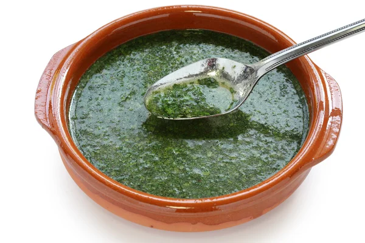

Egyptian Molokhia

Description
Molokhia Recipe, Molokhia is an amazing Mediterranean dish made by cooking minced Jute leaves in broth
There are various ways to prepare Molokhia; today,you will prepare the most famous one, which is the
Egyptian way using a homemade chicken broth.
Egyptian Molokhia recipe info
| Prep Time |
Cook Time |
Total Time |
Servings |
Yield |
| 10 mins |
20 mins |
30 mins |
5 |
5 servings |
| Let's start |
Ingredients
- Molokhia leaves
- Chicken or meat (optional)
- Garlic cloves
- Coriander (optional)
- Vegetable oil
- Chicken broth or water
- Salt and pepper
- Ground coriander (optional)
- Ground cumin (optional)
- Lemon wedges for serving
Steps
- Wash and clean the Molokhia leaves.
- If using chicken or meat, cook it in a separate pot until tender.
- In a large cooking pot, sauté minced garlic and chopped coriander (optional) in vegetable oil.
- Add the Molokhia leaves to the pot and cook, stirring occasionally, until wilted.
- Add chicken broth or water to the pot and bring to a boil.
- Reduce the heat and simmer for about 30 minutes.
- Season with salt, pepper, ground coriander (optional), and ground cumin (optional) to taste.
- If using cooked chicken or meat, add it to the pot and simmer for a few more minutes.
- Serve hot with rice or bread, and garnish with lemon wedges.